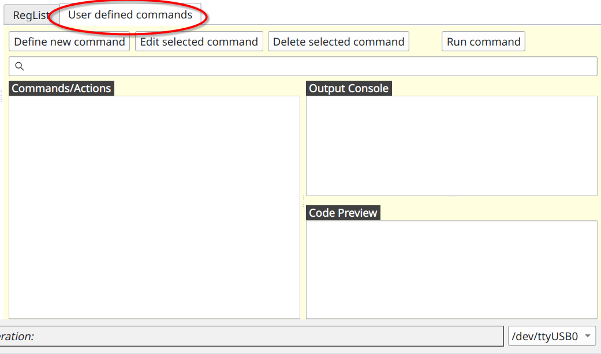
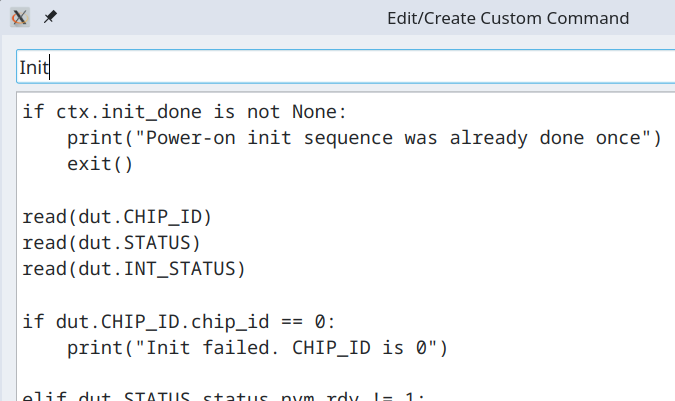
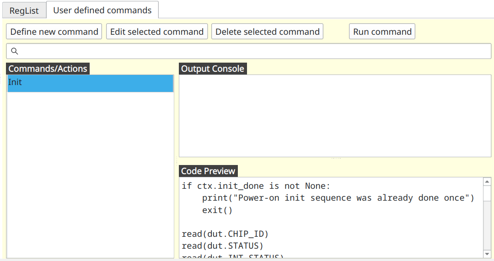

Programing devices over I2C¶
Now that we know how to read and write individual registers we are ready to move up one level and use Python language for programming devices directly inside I2C Commander.
As before we are working with BMP581 chip. We assume that all registers from the datasheet have already being defined.
BMP581 initialization¶
According to the datasheet after powering up the chip it is recommended to read several registers and confirm specific values. If those values are as per specification, then proceed with temperature and pressure measurements.
- Read
CHIP_IDregister and check that its value is not 0. - Confirm that in
STATUSregister fieldsstatus_nvm_rdyandstatus_nvm_errhave values 1 and 0 respectively. - Confirm that in register
INT_STATUSfieldporis set to 1.
Note that reading INIT_STATUS register resets all of its fields to 0. This means that init sequence as outlined above
can only be run once on freshly powered on BPM581 chip.
Let's create function that performs these checks. First lets switch to the "User defined commands" tab.

You will see three main parts.
- Commands/Actions - this is a list of custom commands defined by the user.
- Output Console - printouts and error messages that would normally be written into a terminal will appear here.
- Code Preview - here you will see the code as you click/select commands in the Commands/Actions list.
Now click on "Define new command" button. New window will open where you can enter following

Line above, "Init" is a name of custom command as it will appear in the list of commands. And bellow is the code
if ctx.init_done is not None:
print("Power-on init sequence was already done once")
exit()
read(dut.CHIP_ID)
read(dut.STATUS)
read(dut.INT_STATUS)
if dut.CHIP_ID.chip_id == 0:
print("Init failed. CHIP_ID is 0")
elif dut.STATUS.status_nvm_rdy != 1:
print(f"Init failed. STATUS.status_nvm_rdy is {dut.STATUS.status_nvm_rdy}")
elif dut.STATUS.status_nvm_err != 0:
print(f"Init failed. STATUS.status_nvm_err is {dut.STATUS.status_nvm_err}")
elif dut.INT_STATUS.por != 1:
print(f"Init failed. INT_STATUS.por is {dut.INT_STATUS.por}")
else:
print("Init success")
ctx.init_done = True
This code is plain python but implicitly in it several special functions and objects are available to the user. Let's go over this code to see what they are.
First we are going to access variable ctx.init_done and see if it not None. Object ctx is global session
persistent context. You can read and place any variable in it, and it will survive from one invocation of the command to
the next. Context ctx is also shared between commands, which is how you can pass messages from one command to another.
When you access context variable that is not defined yet, it returns None. Variable becomes defined and populated by
some value when you assign some value to it. At the bottom you can see such assignment ctx.init_done = True. Thus, the
check at the top ensures that init sequence will not be run more than once.
Following three lines have form similar to read(dut.CHIP_ID). Object dut is implicitly available to the user, and it
represents access to the device under test (aka DUT) and its registers.
Function read(...) takes register as an argument and reads that register from the connected chip. After registers are
read we can access their fields. For example, we can check that dut.CHIP_ID.chip_id == 0 and so on.
Now lets click "Ok" button. This command should now appear in the list.

Now if you double-click (or click on "Run command" button or simply press Enter on the keyboard) on this action, its
code will execute and print Init success in Output Console. Subsequent calls to this command prints out
Power-on init sequence was already done once.
Mapping ODR to human-readable values¶
Fixed point number numerical format is often not enough to express content of the registers in human-readable form. For
example ODR_CONFIG register has field called odr. It holds a value which maps to the actual output data rate in
Hertz using lookup table. For example value 0x0 maps to 240 Hz, 0x1 to 218.537 Hz and so on. Thus, we need to
create a list where value and index is a string that holds representation of output data rate in Hertz. We wiil place
this list into context ctx and initialize it in special command __start__.
Command named __start__ is executed automatically when project is loaded including when I2C Commander starts and
loads last opened project. Thus, this makes it an ideal place to initialize constants that can be used by other
commands. To that end, we create command named __start__ with following content.
ctx.ODR_HZ = [
"240", "218.537", "199.111", "179.2", "160",
"149.333", "140", "129.855", "120", "110.164",
"100.299", "89.6", "80", "70", "60", "50.056",
"45.025", "40", "35", "30", "25.005", "20", "15",
"10", "5", "4", "3", "2", "1", "0.5", "0.25", "0.125"
]
ODR_CONFIG.odr field value which we can simply use as index into this array.
Now let's create custom command named "Read ODR (output data rate)" with following content.
read(dut.ODR_CONFIG)
output_data_rate = ctx.ODR_HZ[dut.ODR_CONFIG.odr]
print(f"Output data rate is {output_data_rate} Hz.")
When this command is executed it should print something like this
Output data rate is 1 Hz.
Configuring ODR_CONFIG register¶
Now that we know how to read and display output data rate values we will define graphical UI for odr field.
Special I2CC Python methods and variables¶
read(...)- function that reads register from the target slave device.write(...)- function that writes register into the target slave device.dut- "device under test" object used to access registers.ctx- global context object that lives within a project session of I2C Commander.prompt_user(...)- function that shows GUI for user to input data.Variable(...)- ...U(...)- function that reads and interprets bitarray as unsigned fixed point number.S(...)- function reads and interprets bitarray as signed fixed point number.__command_name__- variable that holds name of executing custom command.